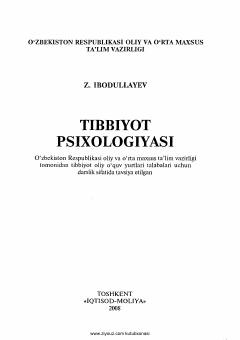

TPTibbiyot oliy o'quv yurtlari talabalari uchun tibbiyot psixologiyasi fanidan ilk o'zbek tilidagi darslik.
Ushbu darslik tibbiyot oliy o‘quv yurtlari talabalari uchun mo'ljallangan bo'lib, tibbiyot psixologiyasining tarixi, miya va ruh muammolari, neyropsixologiya, psixosomatik sindromlar hamda psixodiagnostika masalalarini o'z ichiga oladi. Kitobda bemorlar psixologiyasidagi o'zgarishlar, shifokor va bemor munosabatlari hamda zamonaviy davolash usullari batafsil yoritilgan.